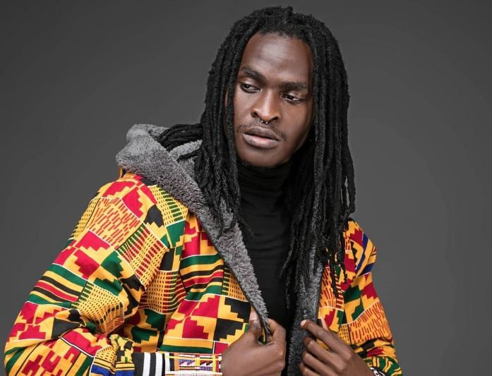

H_ART THE BAND

Bio
Clinging on to a vision of changing the world with their art, these three
versatile blend of artists Mordecai Mwini Kimeu, Wachira Gatama and Kenneth
Muya Mukhwana have defied all odds against them to be labelled as one of
the best bands in Kenya. With time, they have artistically flourished into a
revolutionary force not only in their musical poetic presentation but also in
their conspicuously fashionable sense of futuristic style.
Meeting in the corridors of their acting careers at the Kenya national theatre
in late 2012, the three discovered that they share a similar passion for music,
spoken word/poetry, fashion and arts in general. Not long after H_ART THE BAND
was formed. They later joined Penya Africa’s prestigious artist development program
Sauti Academy from which they graduated in April 2014; after a year of hard work,
determination and performing at almost every venue and street corner in Nairobi hence
building an ever growing steady reputation with various audiences.
Heavily inspired by day-to-day experiences, their music speaks to generations: from the
young to the aged. With Mordecai and Wachira both being “Slam Africa poetry Kings,”
self-taught guitarist Kenchez compliments their rhymes with smooth African tunes, while
Mordecai adorns their jams with his vocals, thus creating a fresh genre
they like to call AFRO-POETRY.

With only a few years in the Kenyan music industry, they have been named in the MCSK
top 10 highest earning artists list in Kenya. In 2015 they won the Mdundo
platinum award for having more than 50,000 online downloads. With nominations for
awards such as Mdundo Awards ‘Best Afro-pop single’ and ‘Best overall single’ for
their debut single ‘Uliza kiatu’. The song has also landed them two nominations in
the All Africa Music Awards (AFRIMA 2015) ‘Revelation of the African continent’ and
‘Most promising artist in Africa’.
Tagging from their eclectic to die for performances, Bingwa awards 2015
has also nominated them as ‘Stage performer of the year’. With four singles
released under their label Penya Africa: Uliza Kiatu, Nikikutazama , Love
phobic and their latest Baby love being on heavy rotation in various
stations there is no limit to the amount of greatness they harbor.
H_art the Band
is not your average Kenyan band. The band hints as much with its debut album Made in the
Streets, in which the songs do the bragging. Made in the Streets is a wholesale
reinvention of the band's sound – music that lives up to the first impression H_art the
Band made with 2014's 'Uliza Kiatu' (Ask My Shoes).
H_ART THE BAND MEMBERS
H_ART the BAND is a Kenyan band comprising Mordecai Mwini, Wachira Gatama and Kenneth Muya.

MORDECAI MWINI KIMWEU

WACHIRA GATAMA
LIST OF H_ART THE BAND SONGS
- Uliza Kiatu
- Love Phobic
- El shaddai
- Nikikutazama
- Ukimwona
- Itakuwa Ngori
- Christmas Anthem
- Rosella
- Tena na Tena
- Watabonga
- Usiseme No
- Issa Vibe
- Baby Love
- Adabu
- Think 1
- For You
My Favourite Band Introductory
H_art the band is My Favorite since they have a somewhat gospel record off the album dubbed
‘El Shaddai’ that features the super talented record producer Cedo that you can’t seem to
get enough of once you listen to it for the very first time. I for one, have had that song
on rotation since Friday to this day, I guess that’s what happens when talented artistes
and record producers decide to work together.
It finally came to fruition, H_art The Band released their debut album dubbed ‘H_art The Band’
and just like their music overall, it didn’t disappoint one bit.
The album is already a classic and it’s only a couple days old. You got to listen to the album
to understand how phenomenal the album truly is.
H_art The Band’s members comprising of talented artistes and poets Mordecai Mwini ,Wachira Gatama,
Kenneth Muya met at the Kenya National Theatre (KNT) back in 2012, the same year they formed
the group finally compiled a project for their fans and released it a couple days back and it is
worth the wait even though it was long overdue.
The album has few features coming from Nyota Ndogo, Kaskazini, Seyi Shay, Bensoul, Victoria Kimani,
Sauti Sol, Cindy Sanyu, Randy Valentine and Cedo. The entire album has a total of 13-tracks.
Fun Moments